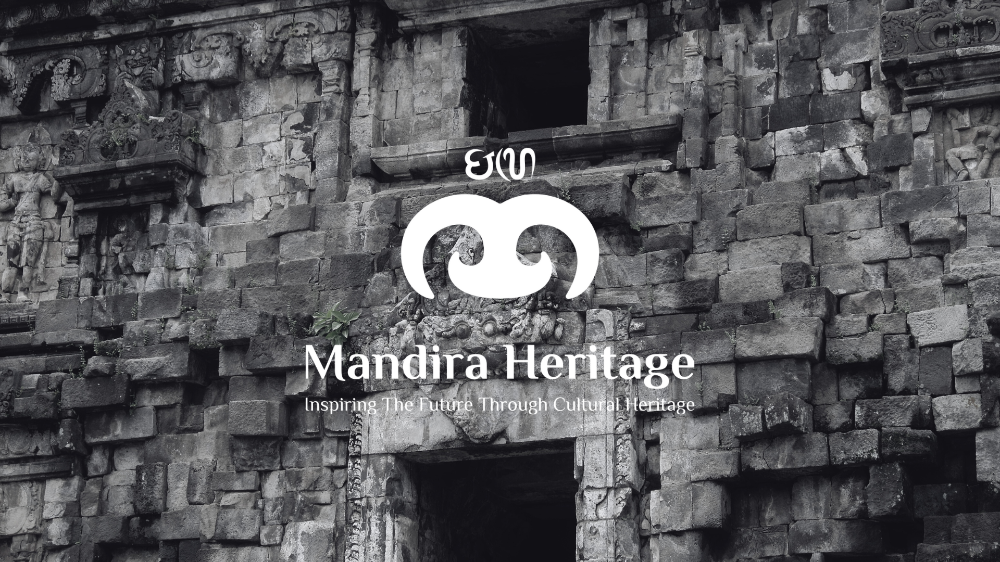

2022
2022Ekskavasi
Ekskavasi Pelatihan Plaosan Kidul
Klien: Departemen Arkeologi UGM
Prambanan, Jawa Tengah — Ekskavasi pelatihan metodologi penggalian arkeologi di kawasan percandian Plaosan Kidul.
CV. Mandira Heritage Group · Est. 2023
Inspiring The Future Through Cultural Heritage
Lewati
CV. Mandira Heritage Group · Est. 2023 · Yogyakarta
Kami membantu pemerintah, museum, institusi pendidikan, dan komunitas dalam penelitian, pelestarian, digitalisasi, dan pengembangan warisan budaya Indonesia.

"Inspiring The Future Through Cultural Heritage"
Berdiri sejak 2023, CV. Mandira Heritage Group merupakan konsultan yang bergerak di bidang penelitian, pemanfaatan, dan pengembangan cagar budaya, kebudayaan, situs arkeologi, dan permuseuman di Indonesia.
Kami menempatkan diri sebagai jembatan antara kajian warisan budaya dan pemanfaatannya secara kreatif — menjaga nilai ilmiah sekaligus menghadirkan manfaat sosial, edukasi, dan ekonomi bagi masyarakat luas.
Menjadi pelopor dalam pelestarian dan pengembangan warisan budaya Indonesia melalui
yang berkelanjutan bagi generasi mendatang.
Kami menggabungkan rigor ilmiah dengan kreativitas modern untuk menghadirkan solusi heritage yang berdampak nyata.
Setiap proyek dirancang menggunakan metodologi arkeologi dan heritage yang terstandarisasi secara akademis dan internasional.
Arkeolog, epigrafis, konservator, ahli GIS, seniman 3D, dan spesialis digital heritage bekerja bersama dalam setiap penugasan.
Fotogrametri, HBIM, AR, dan museum digital — teknologi mutakhir untuk pelestarian warisan budaya yang abadi.
Kami bekerja berdampingan dengan klien, komunitas lokal, dan institusi akademis untuk solusi yang kontekstual dan berkelanjutan.
Survei lapangan terstruktur menggunakan metodologi arkeologi modern untuk identifikasi dan pemetaan situs cagar budaya.
Ekskavasi penelitian dan penyelamatan, kajian nilai penting, inventarisasi objek cagar budaya, dan studi kelayakan.
Kajian epigrafi, arkeozoologi, museologi, perkembangan keruangan perkotaan, dan kajian multidisiplin lainnya.
Dokumentasi digital presisi tinggi, fotogrametri, dan 3D scanning untuk pelestarian abadi warisan budaya.
Heritage Building Information Modeling menggunakan teknologi SLAM-LiDAR untuk dokumentasi bangunan bersejarah.
Perancangan museum digital, digitalisasi koleksi, museum branding, dan pengembangan aplikasi Augmented Reality.
Perancangan media edukasi berbasis warisan budaya, merchandise tematis, dan produk kreatif inovatif.
Perancangan dan pembuatan instalasi interaktif edukatif untuk museum, pameran, dan ruang publik.
Pengembangan produk kreatif berbasis warisan budaya untuk segmen edukasi, retail, dan commercial.
Produksi video dokumenter cagar budaya, video promosi museum, dan konten edukatif warisan budaya.
Program Archaeology Goes To School, festival budaya, pameran arkeologi, dan kegiatan pelibatan masyarakat.
Pembuatan konten digital, strategi media sosial, dan kampanye komunikasi publik warisan budaya Indonesia.
Produk edukasi kreatif berbasis warisan budaya Indonesia untuk semua usia.
 Constructive Play
Constructive Play
Media edukasi bongkar susun berbasis arsitektur cagar budaya untuk sarana edukasi pelestarian dan teknik konstruksi.
 AR / Digital
AR / Digital
Puzzle 2D terintegrasi aplikasi Mandira Play dengan fitur 3D Augmented Reality objek cagar budaya Indonesia.
 Interaktif
Interaktif
Kit mewarnai relief candi interaktif yang mengajak pengguna menelusuri kisah moral dari relief kuno.
 Ekskavasi Mini
Ekskavasi Mini
Pengalaman belajar sejarah dan arkeologi secara interaktif bertema situs arkeologi Indonesia.
Untuk pemesanan dalam jumlah besar atau kerja sama distribusi:
Hubungi Kami untuk Harga Khusus2022Klien: Departemen Arkeologi UGM
Prambanan, Jawa Tengah — Ekskavasi pelatihan metodologi penggalian arkeologi di kawasan percandian Plaosan Kidul.
 2023
2023Klien: CV. Padma Heritage
Bantul, DIY — Survei dan inventarisasi objek diduga cagar budaya di kawasan bekas Keraton Pleret.
 2023
2023Klien: BRIN
Ngawi, Jawa Timur — Penelitian situs paleolitik bersama tim BRIN di kawasan Song Terus.
 2024
2024Klien: Museum UGM
Yogyakarta — Perancangan dan instalasi puzzle interaktif edukatif berbasis koleksi Museum UGM.
 2024
2024Klien: Mandiri
Kaimana, Papua Barat — Dokumentasi digital situs lukisan prasejarah goa menggunakan fotogrametri presisi tinggi.
 2024
2024Klien: Pressing Matter & NIOD
Kolaborasi internasional dokumentasi objek budaya dan situs arkeologi dalam konteks dekolonisasi heritage.
 2025
2025Klien: Museum UGM
Yogyakarta — Pengerjaan instalasi replika roket GAMA-1 sebagai objek edukatif di Museum UGM.
 2025
2025Klien: BPK Wilayah X
Sleman, Yogyakarta — Ekskavasi penyelamatan situs arkeologi periode Mataram Kuno yang terancam pembangunan.
 2025
2025Klien: Mandiri
Dokumentasi digital bangunan gereja bersejarah menggunakan teknologi SLAM-LiDAR dan Heritage BIM.


"Tim Mandira Heritage bekerja sangat profesional dan memiliki pemahaman mendalam tentang konteks arkeologi lokal. Hasil dokumentasi mereka melebihi ekspektasi kami."
"Produk Mandira Puzzle sangat disukai pengunjung museum kami. Cara inovatif untuk mendekatkan koleksi museum kepada masyarakat, khususnya anak-anak."
"Kolaborasi yang sangat berharga. Mandira Heritage memahami pentingnya dokumentasi digital untuk pelestarian jangka panjang situs cagar budaya kami."
Kami terbuka untuk kolaborasi dengan institusi penelitian, pemerintah, museum, sekolah, dan seluruh pihak yang peduli pada warisan budaya Indonesia.
Ceritakan kebutuhan proyek Anda kepada kami — dari riset arkeologi, digitalisasi heritage, pengembangan museum, hingga produk edukasi berbasis budaya.
● Biasanya kami merespons dalam 1×24 jam